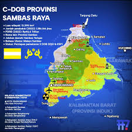

Sejarah Kerajaan Sambas berkaitan dengan Kerajaan Majapahit dan Kesultanan Banjar. Kerajaan Sambas kemudian dilanjutkan oleh Kesultanan Sambas yang asal-usulnya tidak bisa terlepas dari kerajaan di Brunei Darussalam. Antara kedua kerajaan ini mempunyai kaitan persaudaraan yang sangat erat.
Pada zaman dahulu, di negeri Brunei Darussalam bertahta seorang raja yang bergelar Sri Paduka Sultan muhammad setelah dia wafat, tahta kerajaan diserahkan kepada anak cucunya secara turun-temurun.Sampailah pada keturunan yang kesembilan, yaitu Sultan Abdul Djabil Akbar.
Sejarah

Geografi
Kabupaten sambas terletak di antara 1'23" LU dan 108'39" BT dengan batas-batas wilayah administratif.
suku
Mayoritas suku penghuni Sambas adalah Suku Melayu Sambas yang menempati wilayah pesisir pantai dan bantaran sungai Sambas bagian hilir. Di beberapa kota kecamatan seperti Pemangkat dan Kota Sambas terdapat orang-orang Tionghoa. Di pedalaman atau beberapa daerah yang berbatasan dengan Bengkayang dihuni oleh mayoritas Suku Dayak, contoh suku Dayak yang mendiami wilayah ini adalah Suku Dayak Kanayatn.
PENULIS
| nama | Valentino Sunny |
|---|---|
| sekolah | Smk negeri 1 sambas |
| umur | 16 |